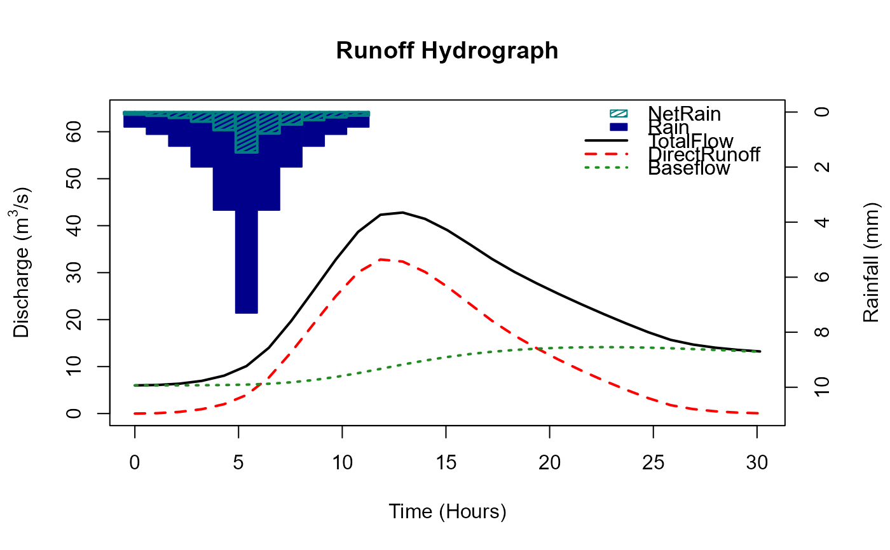

By default this function provides outputs for the ReFH model from catchment descriptors or user defined inputs. It can also be used as a generalised design rainflal runoff modelling tool.
Usage
ReFH(
CDs = NULL,
Depth = NULL,
Duration = NULL,
Timestep = NULL,
RainProfile = "FSR",
PlotTitle = NULL,
RPa = NULL,
alpha = FALSE,
WaterBalance = FALSE,
Season = NULL,
AREA = NULL,
TP = NULL,
BR = NULL,
BL = NULL,
Cmax = NULL,
Cini = NULL,
BFini = NULL,
Rain = NULL,
UHShape = "KT",
UrbanLoss = FALSE,
Loss = NULL,
LossCini = NULL
)Arguments
- CDs
catchment descriptors derived from either GetCDs or ImportCD
- Depth
a numeric value. The depth of rainfall used as input in the estimation of a design hydrograph. The default, when Depth = NULL, is a two year rainfall.
- Duration
a numeric value. A duration (hrs) for the design rainfall
- Timestep
a numeric value. A user defined data interval. The default changes depending on the estimated time to peak to formulate a sensible looking result. This will need updating if the Rain argument is used.
- RainProfile
This is a choice of the temporal rainfall pattern. The default is the FSR profile. However, you can also choose a randomly generated profile with a different loading. The choices are: "Centre", "Back", "Front", or "Random". The latter randomly chooses between the former three
- PlotTitle
a character string. A user defined title for the ReFH plot
- RPa
return period for alpha adjustment. This is only for the purposes of the alpha adjustment, it doesn't change the rainfall input
- alpha
a logical argument with default TRUE. If TRUE the alpha adjustment is applied based on RPa. If FALSE, no alpha adjustment is made
- WaterBalance
A logical argument with a default of FALSE. If it is TRUE, the water balance is checked, if it is not violated the BR parameter is as per the default estimate. Otherwise BR is set as a function of the proportion of net-rain to rain (NetProp) as BR = (1/NetProp)-1.
- Season
a choice of "summer" or "winter". The default is "summer" in urban catchments (URBEXT2015 > 0.03) and "winter" in rural catchments
- AREA
numeric. Catchment area in km2.
- TP
numeric. Time to peak parameter (hours)
- BR
numeric. Baseflow recharge parameter. If BR is set to zero, a constant baseflow of BFini is the result.
- BL
numeric. Baseflow lag parameter (hours)
- Cmax
numeric. Maximum soil moisture capacity parameter (mm)
- Cini
numeric. Initial soil moisture content (mm)
- BFini
numeric. Initial baseflow (m3/s)
- Rain
numeric. User input rainfall. A numeric vector. If this is used, the Timestep argument needs to be applied.
- UHShape
User choice of unit hydrograph shape. The default is "KT" (Kinked triangle). The other options are FSR and Gamma.
- UrbanLoss
Logical with a default of FALSE. If this is TRUE, the urban loss model is applied.
- Loss
A value between 0 and 1. This overrides the default loss model which uses Cini and Cmax and instead NetRain is calculated as Rain * (1-Loss).
- LossCini
A value between 0 and 1. This Adjusts the Cini value according to a user input loss. i.e. if the user wants 70 percent loss and inputs 0.7, the Cini will be updated to ensure this is the overall loss. i.e. Cini will be calculated as Cini = ((1-LossCini)-(Depth/(2Cmax))) * Cmax.
Value
A list with two elements, and a plot. First element of the list is a data.frame of parameters, initial conditions and the catchment area. The second is a data.frame with columns Rain, NetRain, Runoff, Baseflow, and TotalFlow. If the scale argument is used a numeric vector containing the scaled hydrograph is returned instead of the results dataframe. The plot is of the ReFH output, with rainfall, net-rainfall, baseflow, runoff and total flow. If the scaled argument is used, a scaled hydrograph is plotted.
Details
As default this function is the ReFH model as described in the Flood Estimation Handbook Supplementary Report No.1 (2007). However, optional extras have been added such as an urban loss model and an option to ensure a water balance if it has been violated. The urban loss model is applied with default urban parameters (IF = 0.7, DS = 0.5, IRF = 0.4) and is described in the Wallingford Hydrosolutions report "ReFH2 Science Report Closing a Water Balance" (2019). The method to derive design rainfall profiles is described in the Flood Estimation Handbook (1999), volume 2. Users can also input their own rainfall with the 'Rain' argument. As a default, when catchment descriptors (CDs) are provided the ReFH function uses catchment descriptors to estimate the parameters of the ReFH model and an approximate two-year rainfall for the critical duration. If a parameter argument is used for one or more of the parameters, then these overwrite the CD derived parameters. This ReFH function is recommended for analysing the plausible catchment response to an input of rainfall. For this reason, and as noted, multiple additional features are available. The user can change components such as the unit hydrograph and the loss. The WaterBalance option can be applied to ensure it is not violated. Also, the baseflow component can be set as a constant (as opposed to a function of the runoff) by setting BR to zero. The rainfall can also be changed by choosing a randomised profiles. These are derived by using the shape of the FSR profile as a probability mass function.
Examples
# Get CDs and apply the ReFH function
cds_203018 <- GetCDs(203018)
ReFH(cds_203018)
#> Warning: Due to the choice of timestep, duration, and the need for a profile with an odd number of steps, the final duration differs from the user input by a timestep. If you leave timestep as null, a timestep will be automatically chosen to fit the duration.
#> [[1]]
#> AREA TP Duration BR BL Cmax Cini BFini Season Depth Timestep
#> 1 278 5.53 11.8 1.17 40 309 50.8 6.68 summer 23.6 1.076553
#> DurationFinal PeakFlow
#> 1 11.8 43.5
#>
#> [[2]]
#> Time_hrs Rain NetRain Runoff Baseflow TotalFlow
#> 1 0.000000 0.545 0.0901 1.50e-18 6.68 6.68
#> 2 1.076553 0.810 0.1340 7.92e-02 6.69 6.76
#> 3 2.153105 1.240 0.2100 3.56e-01 6.69 7.05
#> 4 3.229658 2.000 0.3480 9.33e-01 6.71 7.64
#> 5 4.306210 3.570 0.6530 2.00e+00 6.76 8.76
#> 6 5.382763 7.300 1.4700 3.94e+00 6.85 10.80
#> 7 6.459316 3.570 0.7790 7.66e+00 7.02 14.70
#> 8 7.535868 2.000 0.4540 1.30e+01 7.34 20.40
#> 9 8.612421 1.240 0.2890 1.90e+01 7.82 26.90
#> 10 9.688973 0.810 0.1910 2.50e+01 8.48 33.50
#> 11 10.765526 0.545 0.1300 3.01e+01 9.29 39.40
#> 12 11.842078 0.000 0.0000 3.28e+01 10.20 43.00
#> 13 12.918631 0.000 0.0000 3.24e+01 11.10 43.50
#> 14 13.995184 0.000 0.0000 3.01e+01 12.00 42.10
#> 15 15.071736 0.000 0.0000 2.70e+01 12.70 39.70
#> 16 16.148289 0.000 0.0000 2.34e+01 13.40 36.70
#> 17 17.224841 0.000 0.0000 1.97e+01 13.80 33.60
#> 18 18.301394 0.000 0.0000 1.66e+01 14.20 30.80
#> 19 19.377947 0.000 0.0000 1.39e+01 14.50 28.40
#> 20 20.454499 0.000 0.0000 1.14e+01 14.70 26.10
#> 21 21.531052 0.000 0.0000 9.15e+00 14.80 23.90
#> 22 22.607604 0.000 0.0000 7.03e+00 14.80 21.90
#> 23 23.684157 0.000 0.0000 5.07e+00 14.80 19.90
#> 24 24.760709 0.000 0.0000 3.28e+00 14.70 18.00
#> 25 25.837262 0.000 0.0000 1.79e+00 14.60 16.40
#> 26 26.913815 0.000 0.0000 9.56e-01 14.40 15.40
#> 27 27.990367 0.000 0.0000 4.76e-01 14.20 14.70
#> 28 29.066920 0.000 0.0000 2.02e-01 14.00 14.20
#> 29 30.143472 0.000 0.0000 5.78e-02 13.90 13.90
#>
# Apply the ReFH function with a user defined initial baseflow
ReFH(cds_203018, BFini = 6)
#> Warning: Due to the choice of timestep, duration, and the need for a profile with an odd number of steps, the final duration differs from the user input by a timestep. If you leave timestep as null, a timestep will be automatically chosen to fit the duration.

#> [[1]]
#> AREA TP Duration BR BL Cmax Cini BFini Season Depth Timestep
#> 1 278 5.53 11.8 1.17 40 309 50.8 6 summer 23.6 1.076553
#> DurationFinal PeakFlow
#> 1 11.8 42.8
#>
#> [[2]]
#> Time_hrs Rain NetRain Runoff Baseflow TotalFlow
#> 1 0.000000 0.545 0.0901 1.50e-18 6.00 6.00
#> 2 1.076553 0.810 0.1340 7.92e-02 6.00 6.08
#> 3 2.153105 1.240 0.2100 3.56e-01 6.01 6.36
#> 4 3.229658 2.000 0.3480 9.33e-01 6.03 6.96
#> 5 4.306210 3.570 0.6530 2.00e+00 6.07 8.07
#> 6 5.382763 7.300 1.4700 3.94e+00 6.16 10.10
#> 7 6.459316 3.570 0.7790 7.66e+00 6.34 14.00
#> 8 7.535868 2.000 0.4540 1.30e+01 6.65 19.70
#> 9 8.612421 1.240 0.2890 1.90e+01 7.14 26.20
#> 10 9.688973 0.810 0.1910 2.50e+01 7.79 32.80
#> 11 10.765526 0.545 0.1300 3.01e+01 8.61 38.70
#> 12 11.842078 0.000 0.0000 3.28e+01 9.52 42.30
#> 13 12.918631 0.000 0.0000 3.24e+01 10.40 42.80
#> 14 13.995184 0.000 0.0000 3.01e+01 11.30 41.40
#> 15 15.071736 0.000 0.0000 2.70e+01 12.00 39.00
#> 16 16.148289 0.000 0.0000 2.34e+01 12.70 36.00
#> 17 17.224841 0.000 0.0000 1.97e+01 13.20 32.90
#> 18 18.301394 0.000 0.0000 1.66e+01 13.50 30.20
#> 19 19.377947 0.000 0.0000 1.39e+01 13.80 27.70
#> 20 20.454499 0.000 0.0000 1.14e+01 14.00 25.40
#> 21 21.531052 0.000 0.0000 9.15e+00 14.10 23.30
#> 22 22.607604 0.000 0.0000 7.03e+00 14.10 21.20
#> 23 23.684157 0.000 0.0000 5.07e+00 14.10 19.20
#> 24 24.760709 0.000 0.0000 3.28e+00 14.00 17.30
#> 25 25.837262 0.000 0.0000 1.79e+00 13.90 15.70
#> 26 26.913815 0.000 0.0000 9.56e-01 13.70 14.70
#> 27 27.990367 0.000 0.0000 4.76e-01 13.50 14.00
#> 28 29.066920 0.000 0.0000 2.02e-01 13.40 13.60
#> 29 30.143472 0.000 0.0000 5.78e-02 13.20 13.20
#>